Micrometraje que muestra a ABEL (23) emergiendo en el Alterplanum. En nuestro mundo, un zorro se acerca
a unas partículas alteradas, que producen una pequeña
brecha. Voice Over de Abel.
(Esto es un intento chungo de recrear la escena)
Juego
Carpeta virtual

Mapa
Tarjeta de identificación
Leyenda
Aventura gráfica en la que ORIOL (36), un obrero del Sector Azul del Alterplanum, descubre la brecha
mientras trabaja y decide infiltrarse en el Sector Superior.
Contiene la contraseña de la Carpeta virtual y un indicio para resolver el puzzle del mapa.
Web que contiene archivos de texto: literatura "académica" con información sobre teoría cuántica (más o
menos) y otro lore del universo.
Bloqueado con contraseña: para desbloquearla es necesario un usuario (presente en la tarjeta de
identificación) y una contraseña (presente dentro del juego).
Imagen digital o impresa con varios planos de los distintos sectores del Alterplanum. Contiene un puzzle
para descubrir la combinación de la entrada al Sector Superior, que
bloquea la Leyenda.
Imagen digital o impresa con información de usuario de Oriol.
Cómic digital (incluido en el programa de la aventura gráfica) con aspecto visual de mural arcaico en el
que se muestra la leyenda y la profecía de la
brecha. Bloqueado con un código que se obtiene al resolver el puzzle del mapa (entrar al Sector
Superior).
Web
Juego (Abel + Canor)
Repositorio de recuerdos
Perfil de red social de Canor
Encuentro
Web con información sobre Abel y CANOR (21), los héroes.
Continuación de la aventura gráfica, esta vez con la posibilidad de alternar entre Abel y Canor.
Parte de Abel: comienza su vida en el Alterplanum; es llevado ante los Sabios para encomendarle su
misión como héroe; se le administran los recuerdos de su pasado; marcha al mundo de los vivos en busca
de Canor.
Parte de Canor: se observan sus problemas diarios: ideas suicidas y relaciones con sus familiares
y amigos.
Ambas partes confluyen en el momento en el que los dos personajes se encuentran.
Repositorio digital con micrometrajes que representan los recuerdos de Abel.
Bloqueado con una contraseña que se obtiene dentro de la parte de Abel de la aventura gráfica.
Perfil en una red social de Canor. Será necesario consultarlo para avanzar en su parte de la aventura
gráfica.
Micrometraje que muestra el encuentro de Abel y Canor. Voice Over de Abel.
Bloqueado hasta que las partes de la aventura gráfica confluyen.
Carpeta virtual
Diario
Juego (Oriol)
Continuación de la aventura gráfica, esta vez de vuelta a la focalización de Oriol.
Al haberse infiltrado en el Sector Superior, Oriol inspecciona información confidencial.
El jugador debe acudir al lugar de la ceremonia a la hora indicada en el diario.
Misma carpeta virtual de la Parte 1, ya desbloqueada. Se pueden añadir nuevos documentos confidenciales
con códigos que se obtienen en la aventura gráfica. En ellos se da más información sobre la brecha.
Diario de Oriol, en el que describe sus indagaciones y cómo descubre que los verdaderos culpables de la
brecha son los Sabios.
Se desbloquea al añadir todos los documentos confidenciales nuevos a la carpeta virtual (se abre un pdf
con el diario).
En el texto aparece la fecha y hora de la ceremonia de los héroes, en la que Abel y Canor reciben su
poder.
Feed de red social
Juego (Canor)
Continuación de la aventura gráfica, esta vez centrada en Canor.
Canor viaja al Alterplanum para enfrentarse en solitario a los Sabios, pero finalmente es
capturado.
Cutscene (cortometraje pero al no estar separado del videojuego supongo que se consideraría cutscene) de
Oriol descubriendo que Canor ha sido capturado, siendo descubierto por los guardias del Sector Superior
y huyendo para hablar con Abel antes de que lo capturen a él también.
Conjunto de publicaciones de red social en las que aparecen fenómenos derivados de la brecha vividos por
ciudadanos, como avistamientos de la brecha, fuerzas especiales investigando, bulos...
Informe de detención
Feed de red social
Noticia
Juego (Abel)
Documento que recoge la detención y condena máxima para Oriol por haber traicionado al Alterplanum y
haber interferido en la misión de los héroes.
Conjunto de publicaciones de red social en las que se ve cómo la brecha empieza a arrasar la ciudad. La
gente se encuentra con sus fallecidos. Los científicos están anonadados.
Artículo de prensa informando sobre la catástrofe y cómo se está gestionando. Se accede a ella mediante
un enlace del feed de red social.
Continuación de la aventura gráfica, esta vez centrada en Abel.
Abel viaja al Sector Superior, derrota a los sabios, libera a Canor y ambos cierran la brecha.
Cutscene (de nuevo cortometraje pero no está separado del juego) del cierre de la brecha y despedida de
los héroes.